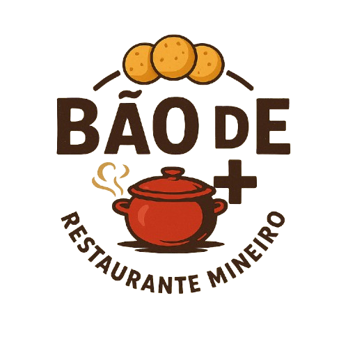
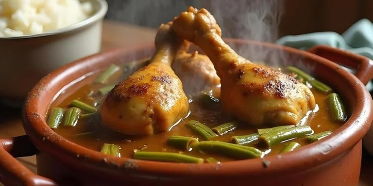
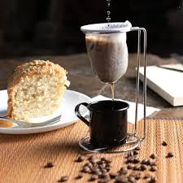
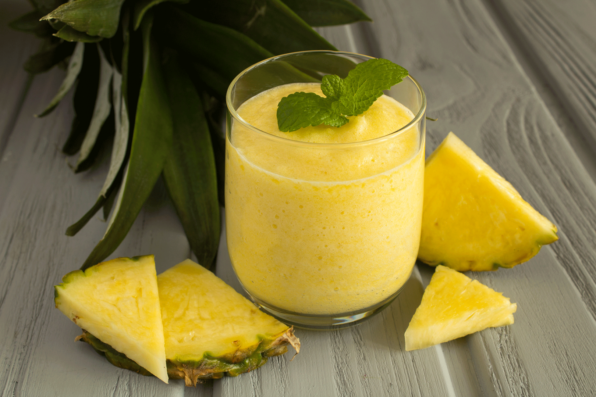
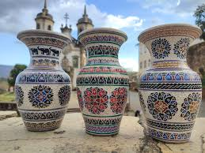

MODA MINEIRA

- Frango ao molho com quiabo
- Arroz e feijão
- Polenta
- Salada: tomate, escarola, agrião
- Couve refogada
R$ 35,00

COMIDA CASEIRA

LANCHE DA TARDE


BEBIDAS


LEMBRANÇAS



QUEM SOMOS
Somos um espaço dedicado à valorização da culinária mineira e do artesanato tradicional, trazendo sabores e histórias de Minas Gerais.
A história de Minas Gerais na gastronomia e no artesanato se entrelaça, mostrando a importância do que é feito com as mãos e com tradição.